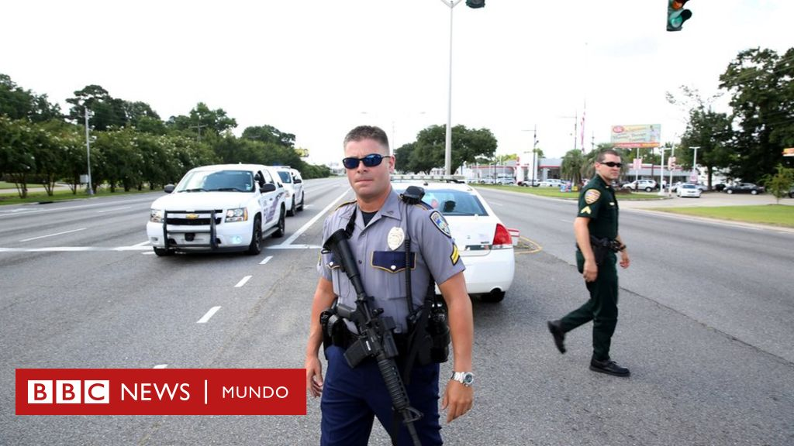
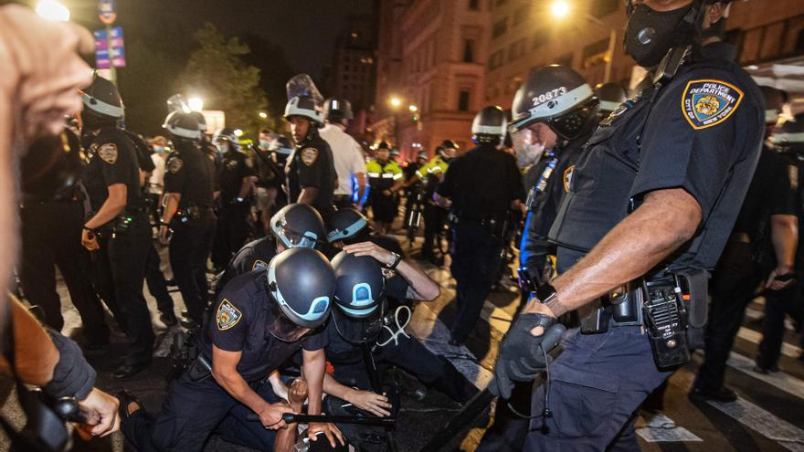
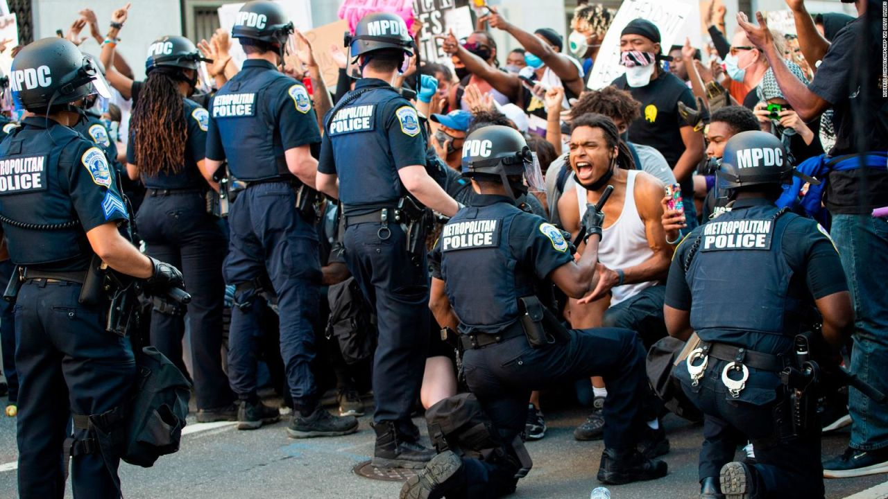

Últimas noticias sobre la Policía en EE.UU.
Aquí encontrarás información sobre las últimas noticias relacionadas con las fuerzas policiales en Estados Unidos.
1. Esta ciudad de Estados Unidos suspendió a toda su policía
Una pequeña ciudad de Alabama, Estados Unidos, suspendió a todo su cuerpo de policía tras una recomendación de un gran jurado que sugirió la disolución del departamento debido a una investigación criminal.
El jurado argumentó que la policía de la localidad de Hanceville estaba operando más como una “empresa criminal” que como una agencia de aplicación de la ley, según consignó CBS News.
El alcalde de Hanceville, Jim Sawyer, expresó el jueves 20 de febrero en un comunicado que el Departamento del Sheriff del condado de Cullman se hará cargo temporalmente de las funciones de la policía mientras las autoridades municipales evalúan los próximos pasos a seguir.
2. Un policía y un hombre armado resultan muertos durante toma de rehenes en hospital de Pensilvania
Un hombre armado con una pistola y ‘zip ties’ entró el sábado en la unidad de cuidados intensivos de un hospital de Pensilvania y tomó como rehenes a miembros del personal, antes de ser abatido por la policía en un tiroteo en el que también murió un agente.
Tres trabajadores del hospital UPMC Memorial resultaron heridos de bala, junto con dos agentes. Un cuarto empleado sufrió heridas en una caída.
El atacante, identificado como Diógenes Archangel-Ortiz, de 49 años, estaba apuntando con un arma a una empleada cuando la policía abrió fuego.
El agente fallecido fue Andrew Duarte, del Departamento de Policía del distrito de West York. Duarte era un veterano de las fuerzas del orden con una destacada trayectoria.
3. Operativos de autoridades migratorias en ciudades de Estados Unidos: más de 5,500 detenidos
San Antonio, Estados Unidos. El presidente de Estados Unidos, Donald Trump, ha intensificado las detenciones de migrantes indocumentados en las principales ciudades del país, arrestando a más de 5,500 personas a quienes califica de “criminales”, aunque muchos carecen de antecedentes penales y han denunciado abusos.
Los arrestos, llevados a cabo por agentes del Servicio de Inmigración y Aduanas (ICE), han tenido lugar en más de una decena de ciudades, incluidos importantes centros metropolitanos como Nueva York, Los Ángeles y Chicago.
En total, ICE ha dicho haber arrestado a 5,537 personas en operativos en más de una decena de ciudades, según información que ha compartido la agencia en la red social X.
El Gobierno ha indicado que se está preparando para aumentar la capacidad de los centros de detención para migrantes, apuntando incluso hacia el uso de bases militares.
Trump ordenó esta semana la construcción de un centro de detención en Guantánamo, con capacidad para 30,000 personas y, en Colorado, las autoridades están preparando unas instalaciones “temporales” en una base de la fuerza aérea en Aurora.
Según datos filtrados a la cadena NBC News, solo el 52% de los 1,179 arrestados del domingo fueron detenciones de personas que habían sido condenadas en el pasado por delitos.
